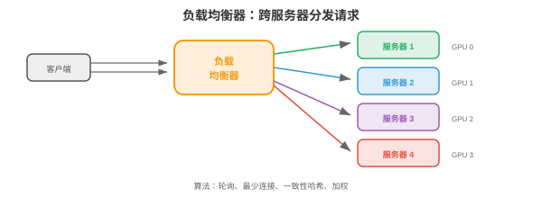
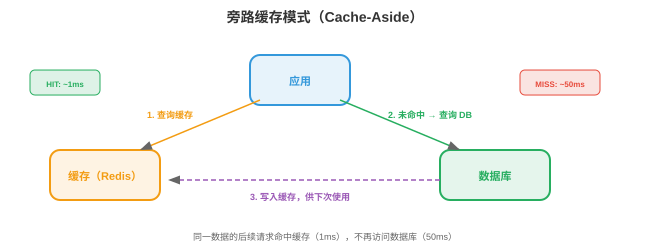
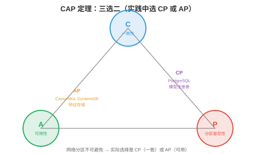

系统设计基础¶
系统设计研究如何构建可在大规模下可靠运行的软件。本节涵盖客户端-服务器架构、网络协议、DNS、代理、负载均衡、缓存、数据库、消息队列、一致性模型和韧性模式。
-
生产中的每个 ML 系统都是分布式系统。推荐引擎不只是一个模型，它还是 API 服务器、特征存储、模型注册表、缓存层、消息队列和监控栈，所有组件通过网络通信。理解系统设计，才是“我训练了模型”和“我构建了产品”之间的差别。
-
顶级科技公司，Google、Meta、Amazon、OpenAI，的系统设计面试会考察你能否设计这类系统。本章提供构件，本节、云基础设施，第 02 节、扩展模式，第 03 节、ML 专属设计，第 04 节，以及已完成的示例，第 05 节。
客户端-服务器架构¶
-
基本模式：客户端（client）发送请求，服务器（server）处理请求并返回响应。浏览器，客户端，向 google.com，服务器，发送 HTTP 请求，服务器返回 HTML。
-
请求-响应模型：同步模型，客户端等待响应。它很简单，但会形成瓶颈：客户端在等待期间空闲，服务器也必须先处理当前请求才能继续。
-
无状态服务器（stateless server）：服务器不记住先前请求。每个请求都含处理所需的全部信息，因此很容易扩展：任意服务器都可处理任意请求，只需在负载均衡器后增加服务器。
-
有状态服务器（stateful server）：服务器在请求间维护状态，例如用户会话。它更难扩展，因为同一用户的请求必须进入同一服务器，会话亲和性。现代系统会避免将状态存入服务器，而将其保存到数据库或缓存，Redis。
网络协议¶
-
第 13 章已介绍网络，TCP/IP 分层、socket。本节聚焦系统设计使用的应用层协议：
-
HTTP/HTTPS：Web 和大部分 API 的协议。请求方法：GET，读取，POST，创建/预测，PUT，更新，DELETE，移除。HTTPS 加入 TLS 加密，第 13 章安全。REST API，第 15 章第 03 节，建立在 HTTP 上。
-
WebSocket：客户端和服务器之间的持久双向连接。HTTP 是 请求 → 响应 → 连接关闭，而 WebSocket 保持连接打开，支持实时流式传输。用途包括：LLM token 流，token 生成即发送、实时仪表板、聊天应用。
-
gRPC：Google 的 RPC 框架。它在 HTTP/2 上使用 Protocol Buffers，二进制序列化，比 JSON 小且快约 10 倍，支持服务端、客户端和双向流。它用于看重性能的内部服务间通信。Triton Inference Server，第 15 章，和 TensorFlow Serving 都使用 gRPC。
-
Protocol Buffers：在
.proto文件中定义消息 schema：
message PredictRequest {
repeated float features = 1;
string model_version = 2;
}
message PredictResponse {
float prediction = 1;
float confidence = 2;
}
service ModelService {
rpc Predict(PredictRequest) returns (PredictResponse);
}
- Schema 可被编译为任意语言，Python、C++、Go、Java，的客户端和服务器代码，类型安全、向后兼容和性能随之获得。
DNS¶
-
DNS，域名系统（Domain Name System），将人类可读名称转换为 IP 地址，第 13 章。在系统设计中，DNS 还提供：
-
基于 DNS 的负载均衡：为同一域名返回不同 IP 地址，将流量分发到多台服务器。方法简单但粒度粗，DNS 结果被缓存数分钟至数小时，流量无法快速再平衡。
-
地理路由：依客户端位置返回最近数据中心的 IP。东京用户获得日本数据中心，伦敦用户获得欧洲数据中心。
-
故障切换：服务器故障后，DNS 不再返回其 IP，新客户端转向健康服务器。但缓存的 DNS 条目使部分客户端仍会在数分钟内访问故障服务器，这就是 TTL 问题。
代理¶
-
代理（proxy）是客户端与服务器之间的中介：
-
反向代理（reverse proxy），位于服务器前方：客户端连接代理，由代理将请求转发至后端服务器。客户端不知道具体哪台服务器处理了请求。Nginx 和 HAProxy 是标准反向代理，提供负载均衡，分发请求、SSL 终止，在代理解密 HTTPS 并向后端发送明文 HTTP、缓存、速率限制和压缩。
-
API 网关（API gateway）：面向 API 的专用反向代理。处理认证、速率限制、请求路由，不同路径 → 不同服务，和 API 版本控制。Kong、AWS API Gateway、Envoy 是常见选择。
-
用于 ML 服务时，API 网关位于模型服务器之前：认证 API key、限制免费层用户速率、将
/v1/predict路由至模型服务器 A、将/v2/predict路由至模型服务器 B，并收集用量指标。
负载均衡¶
- 有多台服务器时，负载均衡器（load balancer）将传入请求分发给它们。

-
算法：
- 轮询（round robin）：按顺序将请求发送给服务器，1、2、3、1、2、3。简单、公平，但不考虑服务器负载。
- 最少连接（least connections）：发送至活跃连接最少的服务器。它更适合处理时间不固定的请求，有些 LLM 请求生成 10 个 token，有些生成 1000 个。
- 加权轮询（weighted round robin）：容量更大的服务器接收更多请求。80 GB GPU 内存的服务器可处理 40 GB 服务器两倍的请求。
- 一致性哈希（consistent hashing）：将请求 key 哈希到指定服务器。同一 key 总进入同一服务器。适用于缓存，同一用户请求命中同一缓存、会话亲和性和前缀缓存，第 17 章：同一系统提示词的请求进入拥有对应 KV-cache 的服务器。
-
L4 与 L7 负载均衡：
- L4，传输层：依据 IP 和端口路由，快但不能查看请求内容。
- L7，应用层：依据 HTTP 路径、header 或 body 路由。可将
/api/chat路由至聊天服务器、/api/embed路由至嵌入服务器，较慢但更灵活。
缓存¶
- 缓存（caching）将频繁访问的数据存入快速存储层，RAM，以避免重复计算或获取。

-
缓存模式：
- Cache-aside，延迟加载：应用先查缓存，未命中时从数据库获取、存进缓存、再返回。这是最常见模式。
- Write-through：每次写入同时进入缓存和数据库，保证缓存始终最新，但写入更慢。
- Write-back：写入只进入缓存，缓存异步刷入数据库。写入最快，但缓存刷盘前崩溃会丢数据。
-
驱逐策略，缓存满时：
- LRU，Least Recently Used：驱逐最久未被访问的条目，最常见策略。
- LFU，Least Frequently Used：驱逐访问次数最少的条目，适合一些条目持续热门的情形。
- TTL，Time To Live：条目在固定时长后过期。用于会变陈旧的数据，例如预测缓存 5 分钟、特征值缓存 1 小时。
-
CDN，内容分发网络（Content Delivery Network）：面向静态内容，图片、JavaScript、CSS，的全球分布式缓存。全球 100 多个地点的服务器从离用户最近的位置提供缓存内容。对 ML 而言，模型权重可缓存在 CDN 以加速下载。
-
Redis：标准内存缓存/数据库，支持 string、list、set、sorted set、hash 和 stream，延迟低于毫秒。用于缓存模型预测、保存会话数据、速率限制，每位用户每分钟计数，和实时特征服务。
-
用于 ML 服务时，可缓存重复输入的预测。许多用户询问 “法国的首都是什么？”时，只计算一次答案并返回缓存结果。聊天机器人工作负载中 20-40% 的缓存命中率很常见，可按比例降低 GPU 成本。
数据库¶
SQL（关系型）¶
-
SQL 数据库，PostgreSQL、MySQL，将数据存入由行和列组成的表，表关系通过外键表达，使用 SQL 查询。ACID 保证：
- 原子性（Atomicity）：事务要么全部完成，要么全部回滚，没有部分更新。
- 一致性（Consistency）：数据库从一个有效状态转至另一个有效状态，约束，唯一键、外键，始终满足。
- 隔离性（Isolation）：并发事务互不干扰。
- 持久性（Durability）：已提交的数据可在崩溃后保留，确认前写入磁盘。
-
SQL 数据库擅长：有关系的结构化数据、复杂查询，join、聚合、严格一致性需求和数据完整性。
NoSQL¶
-
NoSQL 数据库以部分 ACID 保证换取扩展性和灵活性：
- 键值存储（key-value store），Redis、DynamoDB：最简单模型，按 key 快速查询，用于缓存、会话存储和特征存储。
- 文档存储（document store），MongoDB、Firestore：存储 JSON 风格文档，schema 灵活，每份文档可有不同字段。用于用户资料、商品目录和配置。
- 列族存储（column-family store），Cassandra、HBase：为写密集工作负载和时序数据优化。用于事件日志、指标和分析。
- 图数据库（graph database），Neo4j：存储节点和边，为遍历查询优化。用于社交网络、知识图谱和推荐系统。
- 向量数据库（vector database），Pinecone、Milvus、Weaviate、FAISS：存储高维嵌入，支持近似最近邻（ANN）搜索。它对语义搜索、RAG，检索增强生成，和推荐系统不可或缺。
CAP 定理¶
-
在分布式数据库中，三项性质最多同时拥有两项：
- 一致性（Consistency）：每次读均返回最近一次写入。
- 可用性（Availability）：每个请求都得到响应，即使某些节点故障。
- 分区容忍性（Partition tolerance）：即使网络分区，节点不能通信，系统仍继续运行。

-
分布式系统中网络分区不可避免，实际选择是 CP，一致但分区期间可能不可用，例如 PostgreSQL，还是 AP，可用但分区期间可能返回陈旧数据，例如 Cassandra、DynamoDB。
-
对 ML：特征存储通常选择 AP，轻微陈旧的特征值好过没有预测；模型注册表选择 CP，提供错误模型版本会造成灾难。
分片¶
-
分片（sharding）将数据库拆分到多台机器，每个 shard 保存部分数据。
-
哈希分片：哈希 key 决定 shard：
shard = hash(user_id) % num_shards。分布均匀，但无法进行范围查询。 -
范围分片：每个 shard 保存一个 key 范围，A-G 用户在 shard 1、H-N 用户在 shard 2。它支持范围查询，却可能形成热点，例如大量用户名以 “S” 开头。
-
重新分片问题：增加 shard 会使哈希映射失效。一致性哈希将数据移动量降至最低：添加第 \(n\) 个 shard 时仅约 \(1/n\) 的 key 需要迁移。
数据库索引¶
-
索引（index）是以额外存储和更慢写入为代价加速查询的数据结构。没有索引时，查询扫描每行，O(n)；有索引时，在 O(log n) 找到目标。
-
B-tree 索引，默认值：平衡树，第 13、14 章，每个节点含多个 key 和指针。B-tree 对缓存友好，宽节点可装入 cache line，并支持范围查询，
WHERE age BETWEEN 20 AND 30。大多数 SQL 数据库使用 B-tree。 -
哈希索引：通过哈希函数将 key 映射至行位置。查询为 \(O(1)\)，但不支持范围查询，用于精确匹配，
WHERE id = 12345。 -
复合索引：多个列上的索引。
CREATE INDEX ON users(country, city)加速按 country，或 country + city，过滤的查询，不能加速仅按 city 的查询，查询必须包含最左列。 -
取舍：每个索引都会加速读取，却会减慢写入，每次 insert/update/delete 都必须更新索引，并占用存储，每个索引约为表大小的 10-30%。不要索引所有内容，只索引经常查询的列。
-
面向 ML 系统：特征存储的在线数据库需要在实体 key，
user_id、item_id，上建立索引，以快速查特征；实验跟踪数据库需要在(experiment_id, metric_name)上建索引供仪表板查询。
API 设计¶
-
系统通过 API 通信。良好的 API 设计使系统可用、可演进且易调试：
-
REST 约定：对资源使用名词，
/users、/models，对动作使用 HTTP 方法，GET = 读取、POST = 创建、PUT = 更新、DELETE = 删除，对结果使用状态码，200 = OK、201 = created、400 = bad request、404 = not found、429 = rate limited、500 = server error。 -
分页：返回列表的 endpoint 不应一次返回全部结果。使用基于 cursor 的分页，
GET /items?cursor=abc&limit=50，或基于 offset 的分页，GET /items?offset=100&limit=50。大数据集用 cursor 更高效，offset 必须跳过行。 -
版本化：为 API 路径加版本前缀，
/v1/predict、/v2/predict，以便演进 API 而不破坏现有客户端。客户端按自己的节奏迁移到 v2；v1 被弃用，但在流量下降前不移除。 -
错误响应：返回具有足够调试信息的结构化错误：
{
"error": {
"code": "INVALID_INPUT",
"message": "Feature 'user_age' must be a positive integer",
"details": {"field": "user_age", "value": -5}
}
}
消息队列¶
-
消息队列（message queue）解耦生产者，产生工作项的服务，和消费者，处理工作项的服务。生产者将消息发送到队列，消费者就绪时拉取。
-
队列为何重要：没有队列时，消费者慢或宕机就会阻塞生产者；有队列时，生产者发送后即可继续，队列缓冲消息直到消费者就绪。
-
Apache Kafka：分布式、持久化、高吞吐消息队列。消息保存于 topic，每个 topic 在多个 broker 上分区。消费者从分区读取，并跟踪位置，offset。Kafka 保证分区内顺序，并可重放消息，日志是持久的。
-
发布/订阅（pub/sub）：发布者向 topic 发送消息，该 topic 的所有订阅者各收到一份。用于事件驱动架构： “新模型已部署” 同时触发监控服务、A/B 测试服务和日志服务。
-
对 ML：预测请求经 HTTP 到达、放入 Kafka 队列、由 GPU worker 处理，再经回调或 WebSocket 返回结果。队列可缓冲流量突增，并确保 GPU worker 崩溃时不丢请求。
一致性模型¶
-
分布式系统的不同节点可能持有不同数据视图。一致性模型（consistency model）定义系统提供的保证：
-
强一致性（strong consistency）：写入后，任意节点上的后续读取都会看到新值。易于推理，但慢，需要节点协调。
-
最终一致性（eventual consistency）：写入后的一段时间内读可能看到旧数据，但最终会看到新值。快，不需协调，但应用必须处理陈旧读取。
-
因果一致性（causal consistency）：若操作 A 在因果上先于 B，例如“写 X 后读 X”，系统保证 B 看到 A 的结果；无关操作可按任意顺序看到。
-
读己之写（read-your-writes）：用户总能立即看到自己写入的值，即使其他用户会看到陈旧数据。这是大多数应用所需的最低一致性。
韧性模式¶
-
速率限制（rate limiting）：限制每位用户每个时间窗口的请求数，防止滥用并保证公平访问。可用 Redis 中的 token bucket 或 sliding window counter 实现。
-
熔断器（circuit breaker）：下游服务开始失败，错误率超过阈值，时，熔断器“打开”并停止向其发请求，立即返回降级响应。超时后它“半开”并发送一次测试请求；测试成功则“关闭”，恢复正常。这能防止级联故障：特征存储宕机时，模型服务器返回没有特征的预测，而不是让每个请求超时。
-
背压（backpressure）：系统过载时向上游发出减速信号。与其接收请求后失败，不如提前拒绝多余请求，返回 429 或 503，客户端使用指数退避重试。
-
带指数退避的重试：请求失败后等待 1 秒重试；再次失败则等待 2 秒，随后 4、8 秒等。加入抖动，随机延迟，避免全部客户端同时重试，即惊群问题。
-
幂等性（idempotency）：操作执行两次与执行一次效果相同。
PUT /user/123 {"name": "Alice"}是幂等的，两次将名称设为 “Alice” 没问题；POST /payments不是，支付两次是错误的。让操作具备幂等性即可安全重试。